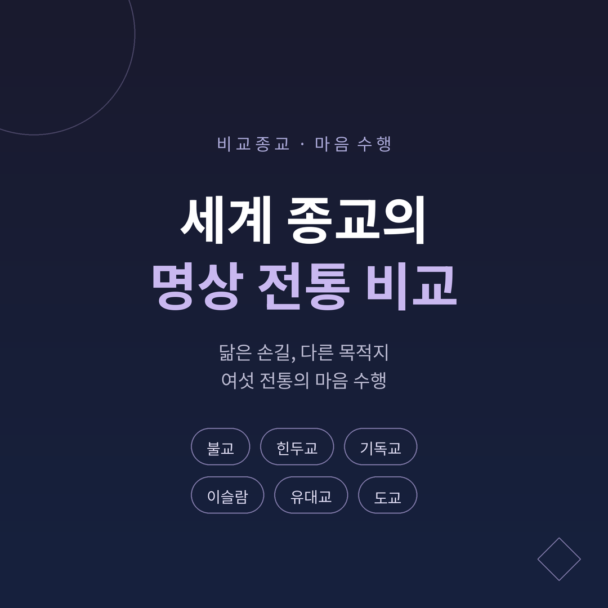
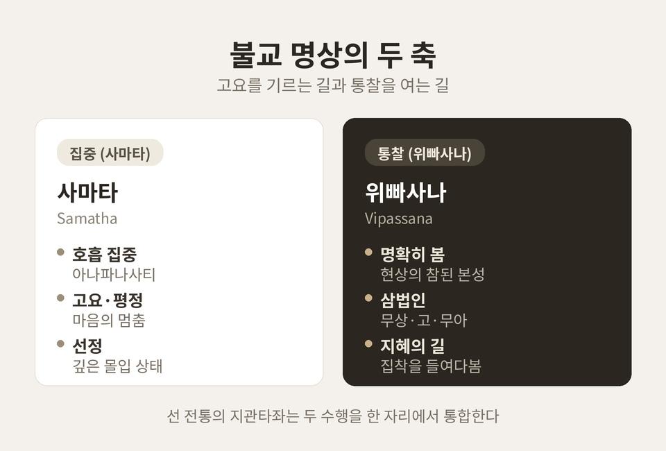
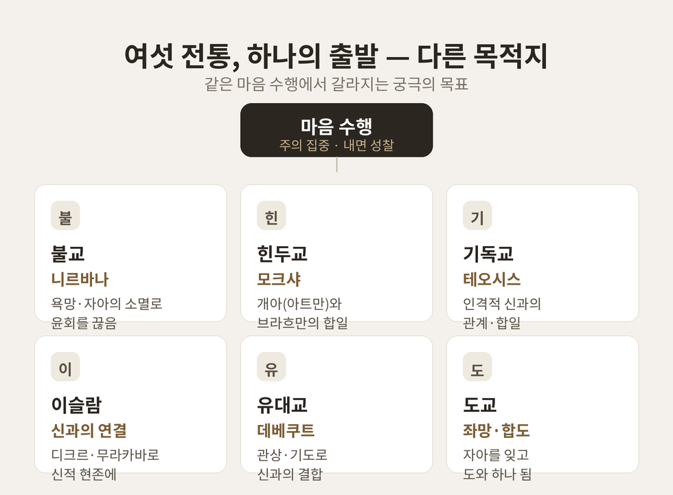

이번 글에서는 세계 종교의 명상 전통을 비교종교의 관점에서 정리해 보겠습니다.
먼저 결론부터 말씀드립니다. 불교·힌두교·기독교·이슬람·유대교·도교는 모두 어떤 형태의 마음 수행을 발전시켜 왔습니다. 호흡을 지켜보거나 신성한 말을 반복하는 방식은 서로 닮았습니다. 다만 그 수행이 향하는 궁극의 목표는 전통마다 근본적으로 다릅니다.
이 글은 어느 한 전통이 더 옳다거나 우월하다고 말하지 않습니다. 각 전통을 그 전통 자신의 언어로 소개하고, 공통점과 차이점을 균형 있게 살펴보는 것이 목적입니다.
세계의 주요 종교는 거의 예외 없이 어떤 형태의 마음 수행을 길러 왔습니다.
비교종교학은 이들이 서로 영향을 주고받았든, 따로 생겨났든, 주의 집중·내면 성찰·초월 지향이라는 공통 골격을 나눠 갖는다는 점에 주목합니다.
명상·기도·의례·금식·헌신 같은 실천은 여러 종교에서 비슷한 목적을 갖습니다. 마음을 고요히 하고, 마음을 정화하며, 궁극적 실재—신이든 진리든 자기 본성이든—와 연결되려는 것입니다.
이 공통성을 인식하는 일은 어느 한 전통이 옳다는 결론이 아닙니다. "궁극적 실재를 향한 인간의 보편적 열망"이라는 다양성을 존중하는 시각으로 이어집니다.
불교 명상은 크게 두 축으로 정리됩니다.
사마타(Samatha, 止)는 멈춤·집중을 뜻합니다. 마음의 고요와 평정을 기르는 수행입니다. 가장 대표적인 방법은 호흡을 지켜보는 아나파나사티(anapanasati)입니다. 정신적 안정과 몰입 상태, 곧 선정(jhana)을 이루어 통찰의 토대를 닦습니다.
위빠사나(Vipassanā, 觀)는 "명확히 봄", 곧 통찰을 뜻합니다. 현상의 참된 본성—무상(anicca)·고(dukkha)·무아(anatta)—를 꿰뚫어 보는 것을 목표로 합니다.
두 수행을 보는 관점은 학파마다 갈립니다. 상좌부에서는 둘을 별개의 기법으로 보는 경향이 있습니다. 대승은 두 수행의 합일을 강조합니다. 선(禪)에서는 대부분 둘을 한 수행의 다른 측면으로 봅니다. 특히 조동종의 지관타좌(shikantaza, "그저 앉음")는 집중과 열린 알아차림을 동시에 통합합니다.
불교 명상은 상좌부·대승·금강승(티베트)의 세 큰 전통으로 갈라졌습니다. 그러면서도 거의 모든 전통이 어떤 형태로든 사마타 수행을 품고 있습니다.

기록상 가장 오래된 명상 형태 가운데 하나가 인도의 요가 명상입니다. 인더스 문명 미술(약 기원전 2,500년경)에는 명상 자세로 보이는 인물이 묘사되어 있습니다.
핵심 개념은 셋으로 추릴 수 있습니다.
파탄잘리의 『요가 수트라』는 명상을 단계로 구조화합니다. 8지(支) 요가, 곧 "여덟 개의 가지"입니다. 야마·니야마·아사나·프라나야마·프라티아하라·다라나·디아나·사마디로 이어집니다.
이 가운데 다라나(Dharana)는 마음을 한 지점에 모으는 일점 집중입니다. 디아나(Dhyana)는 그 집중이 끊김 없이 흐르는 상태로, 노력에서 무위로 옮겨가는 단계입니다. 마지막 사마디(Samadhi)는 신적인 것과의 합일·황홀의 경지이며, 흔히 "깨달음"으로 해석됩니다.
중세의 서방·동방 기독교 수도원 전통은 소리 내어 하는 기도를 넘어 그리스도교 명상으로 나아갔습니다. 그 결과 두 갈래의 실천이 자리 잡았습니다.
헤시카즘(Hesychasm)은 동방 정교회의 전통입니다. "고요·침묵"을 뜻하는 그리스어에서 왔습니다. 그 기원은 초기 그리스도교의 사막 교부까지 거슬러 올라갑니다. 핵심은 짧은 예수 기도—"주 예수 그리스도, 하느님의 아들이시여, 죄인인 저에게 자비를 베푸소서"—를 호흡에 맞추어 일상 내내 끊임없이 반복하는 것입니다. 목표는 신과의 합일, 곧 테오시스(theosis)입니다. 비잔틴 제국 시기 아토스 산을 중심으로 발전했습니다.
렉시오 디비나(Lectio Divina)는 서방 가톨릭의 전통으로, "거룩한 독서"를 뜻합니다. 6세기 성 베네딕도가 체계화했습니다. 성경의 짧은 구절을 읽기(lectio)·묵상(meditatio)·기도(oratio)·관상(contemplatio)의 네 단계로 진행합니다.
같은 기독교 안에서도 방법은 갈립니다. 헤시카즘이 예수 기도를 반복적으로 외우는 데 비해, 렉시오 디비나는 때에 따라 다른 성경 구절을 사용하며 본질적으로 반복에 기초하지 않습니다.
이슬람에도 수세기에 걸쳐 이어진 풍부한 명상 전통이 있습니다. 신비주의 분파인 수피즘(Sufism)에 깊이 뿌리내리고 있습니다. 수피즘은 이슬람의 내적 차원을 강조하며, 신성에 대한 직접적·개인적 체험을 추구합니다.
디크르(Dhikr)는 가장 널리 알려진 수피 명상입니다. "신을 기억함"을 뜻하며, 신의 이름이나 특정 문구를 리듬 있는 호흡과 함께 반복합니다.
무라카바(Muraqaba)는 "경계·알아차림"을 뜻합니다. 마음(심장)을 관찰하고 신적 현존과의 연결을 깊게 하는 수행입니다. 마음을 고요히 하여 산만함을 없애고, 신적 현존에 주의를 모음으로써 내적 평화와 알아차림을 기릅니다.
흥미롭게도 이슬람과 불교 명상 사이에는 집중 기법과 초점화된 내면 성찰이라는 공통점이 지적됩니다. 신을 향하느냐, 통찰을 향하느냐는 다르지만, 마음을 다루는 손길은 닮아 있는 셈입니다.
유대교에도 길고 다양한 명상 전통이 있습니다. 시각화, 시편 영창, 철학적·신비적 관념에의 집중, 내면 성찰, 신의 이름에 대한 관상까지 기법이 다채롭습니다.
메르카바(Merkavah) 신비주의는 탄나임 시대(기원후 1~2세기)로 거슬러 올라갑니다. 유대 신비가들은 에제키엘의 병거(chariot) 환상을 명상하여 영혼을 고양하려 했고, 이것이 관상 학파로 발전했습니다.
카발라(Kabbalah)는 11세기경 시작된 신비 전통의 한 갈래로, 다양한 관상·명상 실천을 담고 있습니다. 16세기 츠파트의 "황금기"에 이르러 유대 명상은 널리 퍼지고 고도로 발전했습니다.
히트보데두트(Hitbodedut)는 "홀로 있음"을 뜻합니다. 브레슬로프의 레베 나흐만이 가르친, 정형화되지 않은 자발적·개인적 기도입니다. 자기 자신의 말로 신에게 이야기하여 친밀한 개인적 관계를 세우는 것을 목표로 합니다. 그 밖에 히트보네누트(관상)·데베쿠트(결합) 등 목표와 방법이 구별되는 여러 기법이 함께 전해집니다.
좌망(坐忘, "앉아서 잊음")은 기원전 3세기경의 『장자(莊子)』에 처음 기록됩니다. 몸·지성·심지어 자아 감각까지 내려놓는 상태입니다. 어떤 전통과 비교해도 손꼽히는 깊은 명상 경지 묘사로 평가됩니다. 집착을 내려놓고 그저 존재하는 도교적 접근으로, 애씀 없는 존재 상태에 이르는 것을 목표로 합니다.
내관(內觀, "안으로 관찰함")은 몸과 마음 내부를 시각화·관찰하는 수행입니다. 오장육부, 내재하는 신(神), 기(氣)의 움직임, 사고 과정을 살핍니다. 신체의 에너지와 마음의 움직임, 그 둘의 미묘한 상호작용을 체계적으로 관찰한다는 점에서 일부 전통의 "통찰 명상"에 비견됩니다.
영향력 있는 텍스트 『좌망론(坐忘論)』은 도교의 좌망·관 명상 기법에 불교와 유교 개념을 결합했습니다. 좌망과 내관은 도교 명상 안에서 서로를 보완하며 작동합니다.
여섯 전통을 나란히 놓으면 닮은 점이 먼저 눈에 들어옵니다.
주의 집중이 출발점이라는 점이 공통됩니다. 불교의 호흡 관찰, 힌두교의 옴 반복, 이슬람 디크르의 신명 반복, 기독교 헤시카즘의 예수 기도, 유대교의 시편 영창—거의 모든 전통이 반복과 집중으로 마음을 안정시키는 데서 시작합니다.
내면 성찰도 공통됩니다. 위빠사나, 내관, 무라카바, 히트보네누트는 모두 자기 내면을 들여다보아 마음을 정화하고 통찰하려 합니다.
그러나 궁극의 목표에서 길이 갈립니다.
| 전통 | 핵심 목표 개념 | 방향 |
|---|---|---|
| 힌두교 | 모크샤(Moksha) | 개아(아트만)가 우주적 실재(브라흐만)와 합일 |
| 불교 | 니르바나(Nirvana) | 신 개념 없이 욕망·자아의 소멸로 윤회를 끊음 |
| 기독교 | 테오시스(Theosis) | 인격적 신과의 관계·합일 |
| 이슬람 | 신과의 연결 | 인격적 신과의 합일을 지향 |
같은 "고요한 앉음"이라도 어떤 전통은 인격적 신과의 연합을, 어떤 전통은 자아의 소멸과 통찰을, 어떤 전통은 자기 본성의 실현을 궁극의 목표로 삼습니다.
방법론도 한 종교 안에서 갈립니다. 헤시카즘은 예수 기도를 반복하고, 렉시오 디비나는 반복에 기초하지 않습니다.
비교종교학은 이런 차이를 우열이 아니라 인간 영적 표현의 다양성으로 봅니다.

오늘날 널리 쓰이는 "마음챙김(mindfulness)"은 그 뿌리가 종교에 닿아 있습니다.
이 말은 팔리어 사티(Sati)에서 왔습니다. 19세기 말 영국 불교학자 리스 데이비스가 "mindfulness"로 번역했습니다. 존 카밧진은 자신의 MBSR이 불교의 위빠사나와 선 전통에서 직접 끌어왔음을 공개적으로 밝혀 왔습니다.
1970년대 의사 카밧진은 마음챙김 명상을 MBSR(마음챙김 기반 스트레스 완화)이라는 세속적 치료 프로토콜로 적응시켰습니다. 그는 커리큘럼을 불교적 틀에서 추출하고, 과학적 응용을 전면에 내세웠습니다. 불교적 기원은 비밀은 아니지만 자주 약하게 언급되거나 거의 언급되지 않으며, 이 세속화된 성격 덕분에 서구에서 빠르게 받아들여졌습니다.
이 세속화를 두고는 평가가 갈립니다.
비판하는 입장에서는, 서구가 영적·철학적 토대를 의도적으로 제거함으로써 풍부한 관상 전통을 한낱 스트레스 관리 도구로 축소했다고 봅니다.
옹호하거나 중립적인 입장에서는, 세속화 덕분에 종교적 장벽 없이 폭넓은 사람들이 명상의 심리적 이점에 접근할 수 있게 되었다고 봅니다. 최근 연구는 명상자와 비명상자 모두 마음챙김을 건강·영성보다 "개인 성장"의 관점에서 이해하는 합의가 있음을 보여 줍니다.
비교종교의 시각에서 이 논쟁은 하나의 긴장으로 요약됩니다. "전통 본래의 맥락을 존중할 것인가, 보편적 접근성을 우선할 것인가." 어느 한쪽이 절대적으로 옳다고 단정하기는 어렵습니다.
정리하면 이렇습니다.
여섯 전통은 마음을 다루는 비슷한 손길을 가졌습니다. 호흡을 지켜보고, 말을 반복하고, 안으로 시선을 돌립니다. 그러나 그 길의 끝에서 만나려는 것은 저마다 다릅니다.
—그래서 명상의 비교는 정답을 가리는 일이 아니라, 인간이 고요 속에서 무엇을 향해 왔는지를 함께 들여다보는 일에 가깝습니다.
서로 다른 목적지를 존중하며 각 전통을 그 자체로 읽어 보시면, 마음 수행이라는 오래된 길이 한결 넓게 보일 것입니다.